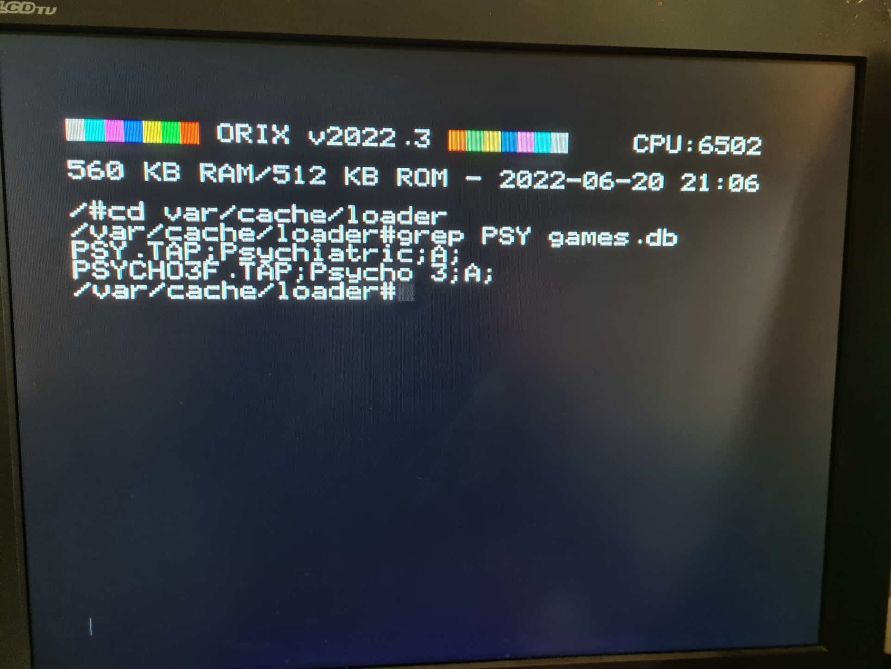
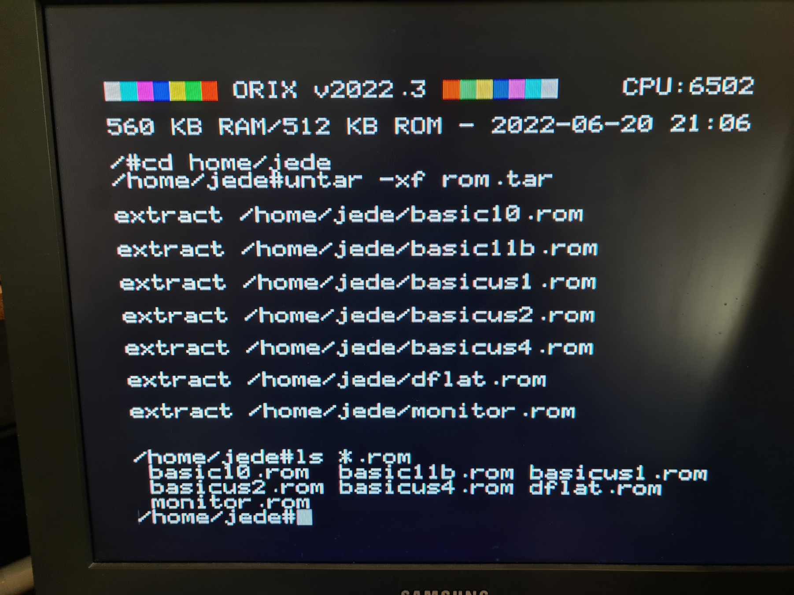
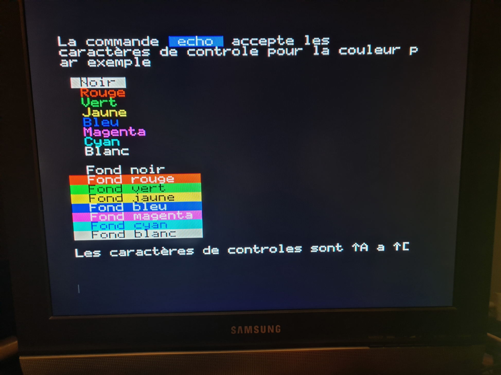

v2022.3
Kernel
-
[XMKDIR] Fix registers
-
[XATN] Arc Tan routine removed
-
[XCOS] Cosinus routine removed
-
[XSIN] sinus routine removed
-
[XLN] Ln routine removed
-
[XLOG] Log routine removed
-
[XEXP] Exp routine removed
-
[XOPEN] Now, WR_ONLY Flag does not create the file. O_CREAT is handled and create the file
-
[XFSEEK] now works in 32 bits mode (return EOK if OK, EINVAL if whence is not recognize)
-
[XOPEN] [XREAD] [XCLOSE] Allows to open 2 files at the same times
-
[XFREE] Fix many bugs
-
[Load from device] Add magic token to start any binary without checks
CC65 (telestrat target)
-
[cc65] Fix mkdir bug
-
[cc65] now send correct fd for fwrite/fopen/fread to the kernel
-
[cc65] kbhit has the right behavior now
Shell
-
Add readline (command line behavior) : insert/replace mode move to end of the line, at the beginning etc (see : sh - Orix (orix-software.github.io) code : Assinie)
-
update man pages
Readline :

Man
-
man removes shell ptr and no others command were working, when man is used without any argument => fixed
-
man can displays now more than one screen
Loader (funct+L)
-
Displays the version of the loader
-
When we press space the informations(and comments) of the software is displayed. Up and down arrows are availables to navigate into this page
-
When a letter is pressed, it goes to the first entry of this letter

New command line tool : grep
Grep search pattern into file

New command line tool : untar
can untar tar files

New command line tool : submit
submit can launch script file

How to upgrade
-
Download https://repo.orix.oric.org/dists/official/tgz/6502/sdcard.tgz
-
gunzip/untar sdcard.tgz on the twilighte board device
- type in the orix shell :
- cd /usr/share/carts/2022.3
if the default device is a usb key
- orixcfg -r -s 4 kernelus.r64
if the default device is a sdcard
- orixcfg -r -s 4 kernelsd.r64
Page last revised on: 2022-07-23